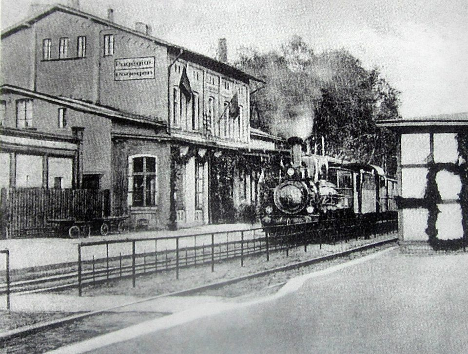
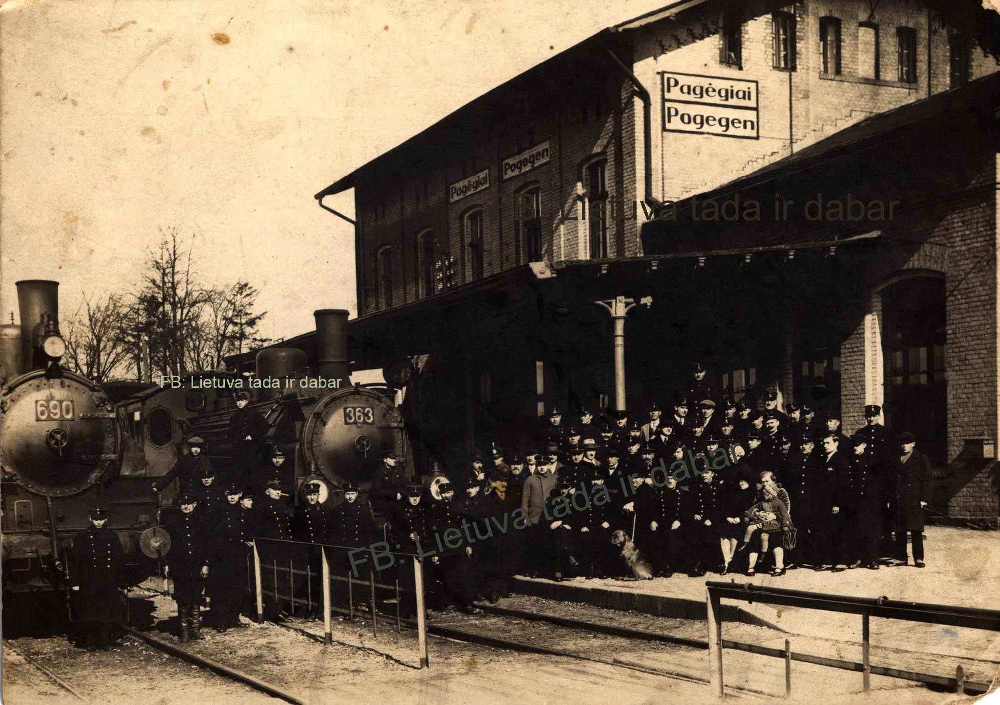
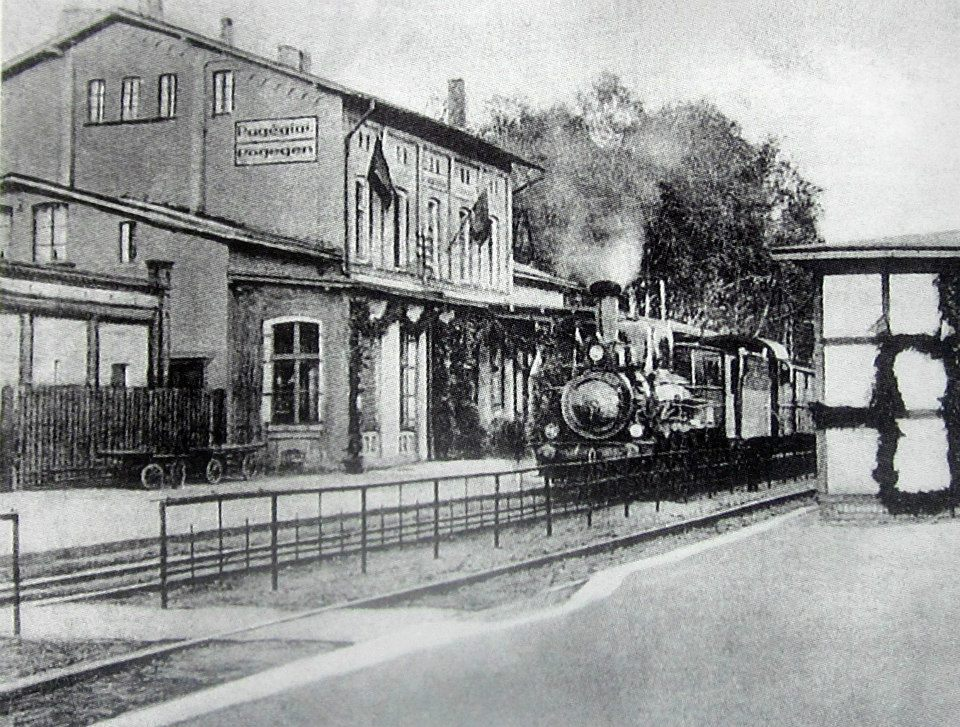
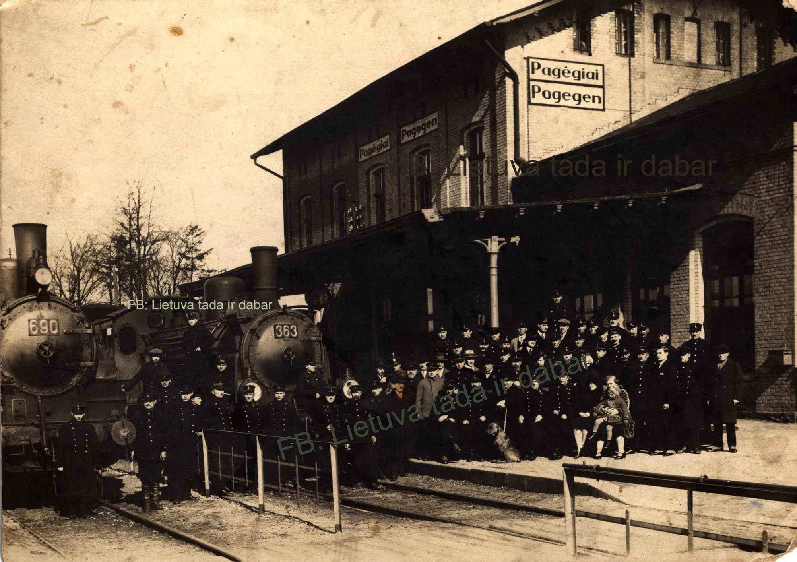

Apie Pagėgius
Pagėgiai – miestelis, garsėjantis nuostabia gamta, istoriniu paveldu ir draugiška bendruomene.
Įdomios vietos
-
Bitėnų Rambyno regioninis parkas
Rambyno kalnas – legendomis apipinta vieta, kurioje lietuvininkai vykdė pagoniškas apeigas. Nuo kalno atsiveria įspūdinga panorama į Nemuną ir Karaliaučių.
-
Raganų eglė
Unikalus gamtos paminklas – eglė, turinti net 18 kamienų! Pasak legendų, ši vieta turi mistinę galią.
-
Martyno Jankaus muziejus
Spaudos draudimo laikotarpiu Martynas Jankus vadintas lietuviškos spaudos tėvu. Muziejuje išvysite Mažosios Lietuvos istorijos palikimą.
-
Algimanto Mackaus gimnazija
Mokykla pavadinta talentingo išeivijos poeto vardu, kuris paliko gilų pėdsaką lietuvių literatūroje.
-
Senovinė geležinkelio stotis
Istorinė XIX a. geležinkelio stotis, menanti Mažosios Lietuvos susisiekimo istoriją.
-
Pagėgių kultūros centras
Kultūrinis Pagėgių miesto traukos centras, organizuojantis įvairius renginius, parodas ir koncertus.
 



Daugiau apie Pagėgius